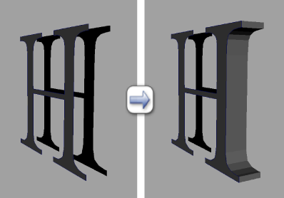

可以使用“桥接”(Bridge)命令在各对边界边之间构建面。生成的桥接面将合并到原始网格中。

可以通过以下两种方法选择边界边：
- 使用某种边选择方法选择两个边界边区域。
- 使用某种面选择方法选择与要桥接的边界边关联的两个面区域。
若要在边界边之间桥接，需满足以下条件：
- 选定的边位于同一多边形网格中。可以使用将单独的网格组合成一个网格。
- 每个选择中边界边的数量是相同的。虽然可以在选择中包含非边界边，但要桥接的边界边的数量必须匹配。
- 与选定边关联的各个面上的法线方向一致。否则，可能通过意外的图形构建生成的桥接网格。
在选定的两个或更多多边形边之间桥接
- 通过执行以下操作之一，选择要桥接的边界边：
- 选择网格上的两个单独区域的边界边。
不要求在选择边时仅选择边界边，因为“桥接”(Bridge)功能会自动过滤掉非边界边。但是，在这两个区域中生成的边界边数必须匹配。
- 选择网格上的两个单独区域的面。
“桥接”(Bridge)功能会在面选择中自动确定有效的边界边，并在构建桥接网格后删除相应的面。
注： 如果各个边界边位于单独的网格中，必须首先使用将这些网格组合成一个网格。
- 选择网格上的两个单独区域的边界边。
- 选择“编辑网格 > 桥接”(Edit Mesh > Bridge) >
 。
。
- 在显示的“桥接选项”(Bridge Options)窗口中，根据需要设置选项。
- 单击“桥接”(Bridge)创建桥接面并关闭窗口。
创建桥接网格时需要考虑 UV 纹理信息。UV 纹理坐标是基于选定的边创建的，而 UV 纹理或颜色信息基于新桥接网格的分段进行插值。
注： 如果最初选择这些面是为了确定原始区域和目标区域，则构建桥接网格后将删除这些面。 - 在显示的视图中编辑器中，编辑桥接网格的 polyBridgeEdge 属性。